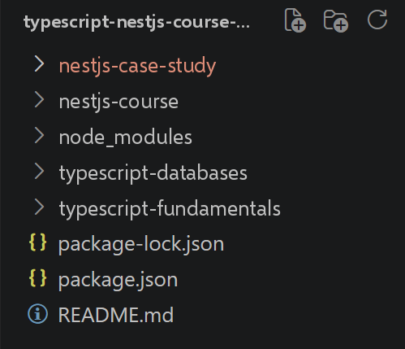

2. 搭建工作环境
原始文档（2019 年）详细讲解了如何在 Windows 10 上安装 [Laragon]、[Netbeans]和 [Visual Studio Code] ，并配有大量截图说明 PATH 的配置。到了 2026 年，安装简单得多：我们将使用以下工具。
- [Visual Studio Code] 用于编写 TypeScript 代码；
- [Node.js]，版本 26 或更高——正是这个版本使 [Temporal] 对象（在本文档最后一章介绍）无需任何特殊选项即可使用；
- [TypeScript]，版本 6；
- [tsx]，一个无需预先编译即可直接运行 .ts 文件的工具——本文档中的所有脚本都将使用它；
- [npm] （Node Package Manager），随 Node.js 一起提供，用于安装我们需要的库；
2.1. 验证已安装的工具
安装好 Node.js 和 Visual Studio Code 后，打开终端（在 VSCode 内或之外均可），验证已安装的版本：
结果（具体版本可能不同；本课程推荐 26.x 或更高版本）：
执行结果：
2.2. 设置 VSCode 项目
本课程的代码文件夹如下：

该文件夹对应于完整的脚本目录结构（typescript-nestjs-course-scripts/），即本文档简介中介绍、并且您已下载的那个结构。在 VSCode 中打开 typescript-fundamentals/ 子文件夹：本课程前几章的脚本就位于此处。其根目录下已包含两个文件 package.json 和 tsconfig.json——我们来看一看它们。
2.2.1. 文件 package.json
该文件列出项目的依赖。它还指定了 "type": "module"，使 Node.js 原生地将我们的文件视为 ECMAScript 模块（使用 import/export），而无需像 2019 年那样借助 esm 包这样的中间工具。
{
"type": "module",
"scripts": {
"check": "tsc --noEmit"
},
"devDependencies": {
"eslint": "^8.57.0",
"@typescript-eslint/eslint-plugin": "^7.18.0",
"@typescript-eslint/parser": "^7.18.0",
"typescript": "^6.0.3",
"tsx": "^4.19.0",
"@types/node": "^22.7.0"
},
"dependencies": {
"axios": "^1.7.0",
"moment": "^2.30.0",
"qs": "^6.12.0",
"sprintf-js": "^1.1.3"
}
}
2.2.2. tsconfig.json 文件
该文件用于配置 TypeScript 编译器。 严格模式已启用：这是推荐的配置，因为它能让 TypeScript 在编译期间检测出尽可能多的错误。
{
"compilerOptions": {
"target": "ES2023",
"lib": ["ESNext"],
"module": "NodeNext",
"moduleResolution": "NodeNext",
"esModuleInterop": true,
"strict": true,
"types": ["node"],
"noEmit": true
},
"include": ["**/*.ts"]
}
如果您尚未下载该目录结构，或者需要重新安装其依赖，这里提醒您在根目录下只需运行一次的命令；它将安装所有课程脚本所需的 Node.js 模块：
以下命令在 VSCode 终端中输入，当前目录设置为 [typescript-fundamentals]。

2.3. 第一个脚本
我们来创建一个名为 tests/test-01.ts 的文件：
在终端中，于项目根目录下运行它：
执行结果：
2.4. 第二个脚本：类型检查
我们来创建第二个文件 tests/test-02.ts，其中有一个显式指定类型的变量：
执行结果：
现在我们尝试给这个声明为 数字类型的变量赋一个字符串：
甚至无需运行脚本，VSCode 就会立即用红色标出该行，并且类型检查命令会失败：
执行结果：
这正是 TypeScript 相对于 JavaScript 的关键优势：一整类错误（意外的类型混用）会在 执行之前直接在编辑器中被检测出来，而不是等到代码在生产环境中崩溃时才被发现。
2.5. ESLint
[ESLint] 是一个用于验证代码是否遵守一组风格规则和最佳实践（未使用的变量、可疑的比较等）的工具。配置文件 .eslintrc.cjs （扩展名 .cjs 而不是 .js，是必需的，因为 package.json 声明了 "type": "module"）使用 @typescript-eslint 解析器，它能理解 TypeScript 语法（类型、接口、私有字段 #x等）：
module.exports = {
root: true,
env: { node: true, es2024: true },
extends: ["eslint:recommended", "plugin:@typescript-eslint/recommended"],
parser: "@typescript-eslint/parser",
plugins: ["@typescript-eslint"],
parserOptions: { ecmaVersion: "latest", sourceType: "module" }
};
然后我们使用以下命令分析整个项目：
2.6. VSCode ESLint
VSCode 扩展名为 [ESLint] （需从“扩展”选项卡安装），它会在编辑器中实时直接显示 ESLint 警告——无需每次手动运行命令。
现在我们有了一个完整的工作环境。下一章将介绍 TypeScript 语言的基础知识。